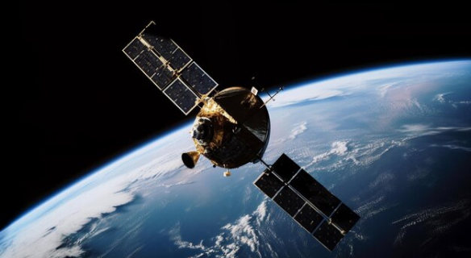
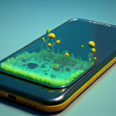
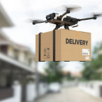

Robôs domésticos começam a ser adotados para tarefas diárias, prometendo mais conforto e eficiência nas residências.
Novo Smartphone Projetor 3D chega ao mercado, transformando a forma como vemos nossas telas!
Tecnologia 6G chega às metrópoles brasileiras, prometendo revolucionar a forma como vivemos e nos comunicamos.
Empresa lança relógio inteligente capaz de monitorar a saúde mental, oferecendo insights valiosos para o bem-estar pessoal.
Escolas adotam a tecnologia VR para proporcionar experiências imersivas, transformando a aprendizagem tradicional.
Mais Lidas da Semana
Ver Tudo
Veículos
Protótipo de veículo voador é apresentado, marcando o início da era dos transportes aéreos pessoais.
HologramasPlataforma de videoconferência apresenta nova função de hologramas, tornando as chamadas virtuais mais realistas e envolventes.
Realidade VirtualNova geração de consoles de videogame é lançada, trazendo gráficos ultra-realistas e experiências de jogo totalmente envolventes.
Internet

Projeto busca oferecer internet de alta velocidade em áreas remotas através de satélites.
Destaques de Inteligência Artificial
Ver TudoEmpresa surpreende o mundo ao anunciar um algoritmo capaz de prever eventos futuros com alta precisão.
Em um avanço surpreendente da inteligência artificial, uma empresa anuncia o desenvolvimento de um algoritmo capaz de prever eventos futuros com notável precisão. Descubra como essa tecnologia está desafiando as fronteiras da previsão e quais são as implicações para diversas áreas, desde finanças até planejamento estratégico.
Dispositivo portátil promete traduzir instantaneamente diferentes idiomas, facilitando a comunicação global.
Em um mundo cada vez mais conectado, a comunicação sem fronteiras é essencial. Nesse contexto, um dispositivo portátil surge como um verdadeiro herói linguístico, prometendo quebrar as barreiras idiomáticas instantaneamente. Imagine poder se comunicar fluentemente em qualquer lugar do mundo, independentemente do idioma local. Este dispositivo não é mais uma visão futurista, mas uma realidade impressionante que está transformando a forma como nos conectamos globalmente. Nesta reportagem, mergulharemos nas funcionalidades deste dispositivo revolucionário e como ele está moldando uma nova era de compreensão global.
Criados para auxiliar idosos, robôs de companhia ganham popularidade, oferecendo suporte emocional e físico aos usuários.
A tecnologia não só avança, mas também busca tornar a vida mais significativa para todas as gerações. No cenário atual, os robôs sociais, projetados especialmente para oferecer apoio e companhia aos idosos, estão ganhando destaque. Mais do que meros assistentes, esses robôs são programados para fornecer suporte emocional e físico, preenchendo lacunas nas necessidades de cuidado. Nesta matéria, exploraremos como esses companheiros tecnológicos estão impactando positivamente a qualidade de vida da terceira idade e proporcionando uma nova perspectiva sobre o envelhecimento.
Aplicativo utiliza inteligência artificial para ajudar usuários a manterem o foco e aumentarem a produtividade no dia a dia.
No turbilhão da vida moderna, onde distrações são abundantes, um aplicativo inovador surge como um aliado indispensável para quem busca maior concentração e eficiência no cotidiano. Utilizando avançados algoritmos de inteligência artificial, este aplicativo promete mais do que simplesmente gerenciar tarefas; ele está programado para compreender os padrões de trabalho de cada usuário, oferecendo sugestões personalizadas para otimizar o tempo e maximizar a produtividade. Nesta matéria, exploraremos como essa ferramenta tecnológica está se tornando a chave para manter o foco em um mundo cada vez mais cheio de distrações, transformando a maneira como encaramos nossas responsabilidades diárias.
Viu Isso Aqui?
Ver Tudo

Aplicativo de monitoramento ambiental ganha destaque, incentivando práticas ecológicas e promovendo a conscientização.
Óculos de realidade virtual com feedback tátil proporcionam uma experiência sensorial completa, imergindo usuários em ambientes digitais.
Surge uma nova moeda digital baseada em tecnologias sustentáveis, buscando minimizar o impacto ambiental associado à mineração de criptomoedas.
